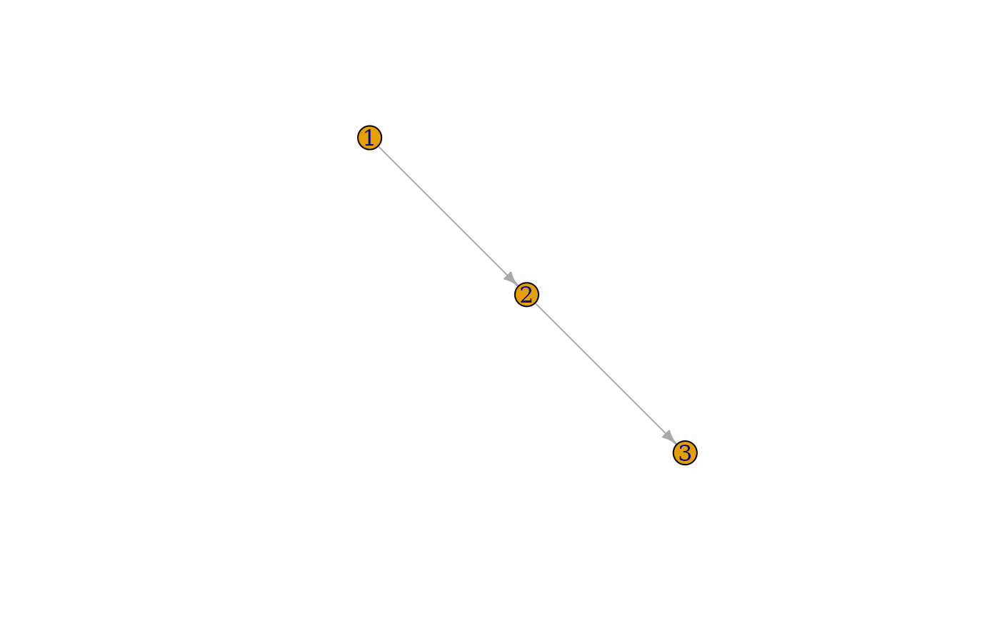

Extract an ego-subgraph based on a regex pattern
filter_igraph_egonetwork.RdGiven a igraph object and a pattern (regex), this function will return
an ego-subgraph of these node(s), within specified depths from them.
If the graph is directed, the nodes are filtered as an ego-network within specified depths
Usage
filter_igraph_egonetwork(
graph_igraph,
regex,
degrees_in_filter = 2,
degrees_out_filter = 2
)Arguments
- graph_igraph
An igraph object representing the graph.
- regex
characterA character string representing the regex pattern to filter nodes.- degrees_in_filter
integer, default =2. An integer specifying the depth of inward reachable nodes (default is 2).- degrees_out_filter
integer, default =2. An integer specifying the depth of outward reachable nodes (default is 2).
Examples
g <- igraph::make_ring(10, directed = TRUE)
igraph::V(g)$name <- as.character(1:10)
subg_2_lvl_out <- filter_igraph_egonetwork(g, regex= "1$", 0, 2)
plot(subg_2_lvl_out)
